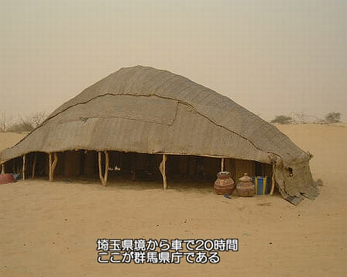

1〜4歳ころまで，この地で過ごした．鮭とばと甘酒が大好きだった(今もめちゃ好き)
理由はよく覚えてないけど引っ越した．現在の東区．今思えばこの地が最高の土地だった．とてもサッカーをやりたかった(送迎の都合でやらせてもらえなかった)
その頃小4だった．親の会社の関係で引っ越した．友達ともう会えなくなるのは辛かった． ここは驚愕の地だった．僕が驚愕したのは次の点だ．
特に4つめは僕を絶望させた．サッカーがしたかった． 僕のこの地への地元愛は皆無
長岡高専に入学した．(理由は後述)
それに伴い寮生活．3年間寮に暮らしあまりのQOLの低下に耐えられずエスケープして一人暮らしを始める．食事もアレだが風呂のほうがアレ
ただ，最高の友人たちとワイワイできなくなるのは少しさみしかった ．
スペースが余ったので群馬県庁の写真を貼ります．
C,Ruby,JavaScript,HTML,Java(勉強した期間が長い順)
HTMLは<>書くのつらすぎるからslimに依存してる．
Railsはすごいけどすごすぎてよくわからない
Ruby on Railsを，自信持てるくらいできるようになりたい．
Webも興味あるけどウェアラブルデバイスも興味あるしiPhone6買ったのでiOSアプリも作りたい
僕の家にまともに使えるPCが入ってきたのは中2の頃だった，ガッツリはまりこんだ．まずタイピングから始めて，2週間くらいでブラインドタッチはほぼ完璧にできるようになった．中2の終わりには4keys/secくらいは打てた．それまでゲームやテレビに向かっていた時間が，ほとんどPCに向かうのに費やされた(アニメやニコ動の沼に嵌っていった)． そして次第にプログラミングに興味をもつようになった．はじめてHTML触ったのはこのころだった．そんな僕を見て，両親が長岡高専を進めてきた．オープンキャンパスに行って，C言語によるプログラミングを体験した．とても楽しく，僕は長岡高専という環境に魅了された． 当時の僕は成績がそれなりによく，推薦受かるだろ(慢心)って感じで推薦を受けた．受験勉強は一切してない．今思えば完全に舐め腐っていたが推薦で受かった．
プログラミングをがっつり教えてもらいたくて長岡高専の制御に来た．しかし現実は結構違った．というか，今だから分かることだが完全に考えが甘かった．高専で専門の勉強が始まるのは2,3年からだ．1年生はほとんど数学，英語，国語，生物・・・等の一般科目をひたすら勉強させられる．しかも寮生だ．1年生初期の僕にとって，寮はまさに地獄だった．と言っても2週間くらいで慣れたけど．そして僕は完全に堕落した．単位落とすほどではないがお世辞にもいいと言える成績ではなかった．(高専生の典型的パターン)そして次第に，自分がなぜ高専にきて，これから何をしたいのかさえわからなくなっていった．
そんな僕の考えが変わり始めたのはたしか3年生の後半になってからだった．ベンチャーを起業した長岡高専の卒業生が，講演にやってきたのだ．ものすごい衝撃を受けた．と同時に高専に3年もいて何も出来ないことに焦りを感じ始めた．そしてここでようやくあることに気づく．
自分で勉強しなければ
学校は全てを教えてくれる場ではない．プロの先生が基礎の基礎を丁寧に教えてくれる．それ以降は自分で学ばなければならない
その先輩たちからの話を聞いて，僕も絶対に参加しようと思った．次の夏早速応募した．落ちた．理由はもちろん実力不足．それが悔しくて，Webを勉強し始めた．次の冬，高専ベンチャーに応募し，参加権を得た．期待通りの最高の経験になった．(ちゃんとブログ書いてた．えらいぞ僕)
高専ベンチャー&高専カンファレンス高専ベンチャー，高専カンファ等に参加した僕の結論は2つ